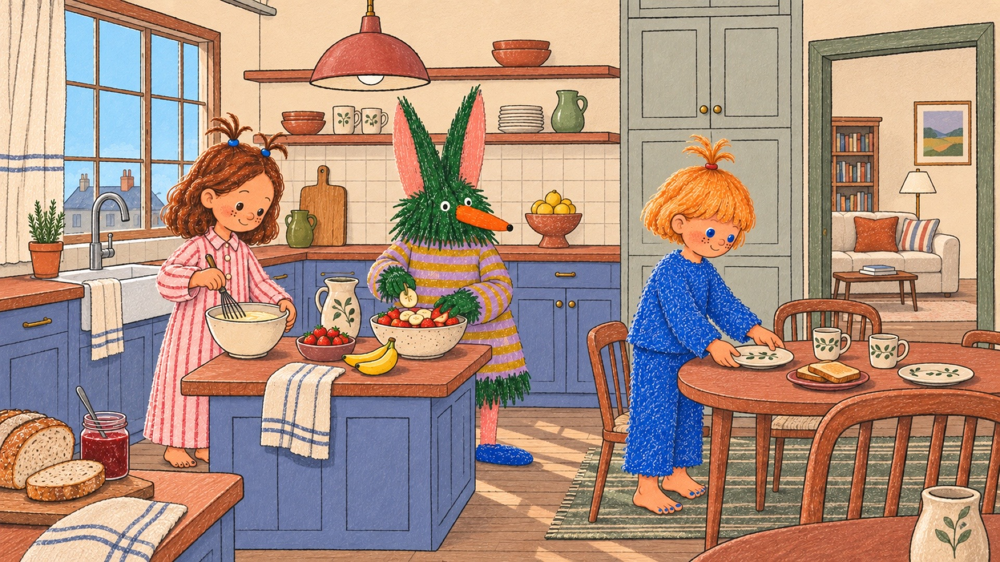

生活的第三空間・一本寫給大人的童書
The Third Place for Self-Awareness
讓理解自己與理解彼此，成為生活的一部分。
我們相信許多生活中的困惑，都值得被好好理解。面對情緒、親密關係、人際互動，或人生不同階段的選擇，我們經常有很多想法，
卻不一定知道如何整理、表達，甚至不知道該從哪裡尋找答案。
Human Space 因此誕生。
我們希望創造一個開放的對話空間，這裡可以是與自己的對話，也可以是與伴侶、家人、朋友、同事，甚至整個社會的交流。 從個人的自我探索，到企業與組織的心理健康倡議，Human Space 希望讓心理學走出書本與專業領域，成為每個人都能接觸、理解並運用的生活知識。
We believe that the questions we encounter in everyday life deserve to be understood.From navigating emotions and relationships to making sense of ourselves and the world around us, we often have questions but don’t always know where to begin.
That’s why we created Human Space.
We envision an open space for dialogue: with ourselves, our partners, families, friends, colleagues and the wider society. From individual self-discovery to mental wellness initiatives for businesses and organizations, Human Space aims to bring psychology beyond academic and professional settings, making it accessible and relevant to everyday life.
A third space for life.每個人都有自己的內在世界。 保持好奇、理解差異，並透過連結認識彼此， 讓我們有機會用不同的角度看待自己與生活。
保持好奇，探索未知的自己。
理解情緒，也理解彼此的不同。
透過連結，發現更多可能。
Everyone has an inner world of their own. By staying curious, embracing differences and connecting with one another, we discover new ways to understand ourselves and life.
Stay curious. Explore the unknown.
Understand emotions and embrace differences.
Discover more through human connection.
從情緒、關係到大腦與日常生活， 一起發現那些關於人的有趣知識。
人格特質、自我覺察、心理測驗與內在探索。
情緒理解、依附關係、人際互動與界線。
心理學概念、神經科學、記憶與人類行為。
生活習慣、文化觀察與那些有趣的人類現象。
From emotions and relationships to the brain and everyday life, there is always something fascinating to discover about being human.
Personality, self-discovery and interactive quizzes.
Emotional awareness, attachment, connection and boundaries.
Psychology, the brain, memory and human behavior.
Habits, culture and the fascinating side of being human.
Human Space 希望透過社群的支持，持續投入研究、內容製作與互動體驗，提升每一項作品的品質，也讓更多心理健康知識能以容易理解的方式被分享。 你的支持不只是對創作的鼓勵，更是參與這個空間持續成長的一種方式。它將幫助我們探索更多可能，與不同領域合作，並為心理健康教育與產業發展創造更多價值。
我們期待與你一起，
With the support of our community, we can continue investing in research, content development and interactive experiences, improving the quality of our work while making mental wellness knowledge more accessible.
Your contribution is more than an appreciation of what we create. It is a way to be part of our growth, helping us explore new possibilities, collaborate across different fields and contribute to the future of mental wellness education.